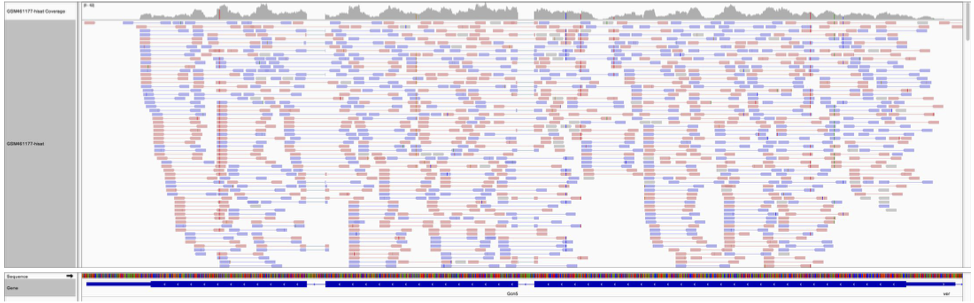

Counting strategy

Count the number of reads per annotated gene
To compare the expression of single genes between different conditions (e.g. with or without Pasilla depletion), an essential first step is to quantify the number of reads per gene.

From the image above, we can compute:
Number of reads per exons
| Gene | Exon | Number of reads |
|---|---|---|
| gene1 | exon1 | 3 |
| gene1 | exon2 | 2 |
| gene2 | exon1 | 3 |
| gene2 | exon2 | 4 |
| gene2 | exon3 | 3 |
- The gene1 has 4 reads, not 5 (gene1 - exon1 + gene1 - exon2) because of the splicing of the last read.
- The gene2 has 6 reads (3 spliced reads)
Counting tools
Two main tools could be used for that: HTSeq-count (Anders et al, Bioinformatics, 2015) or featureCounts (Liao et al, Bioinformatics, 2014). FeatureCounts is considerably faster and requires far less computational resources, so we will use it here.
In principle, the counting of reads overlapping with genomic features is a fairly simple task. But there are some details that need to be given to featureCounts: for example the strandness.